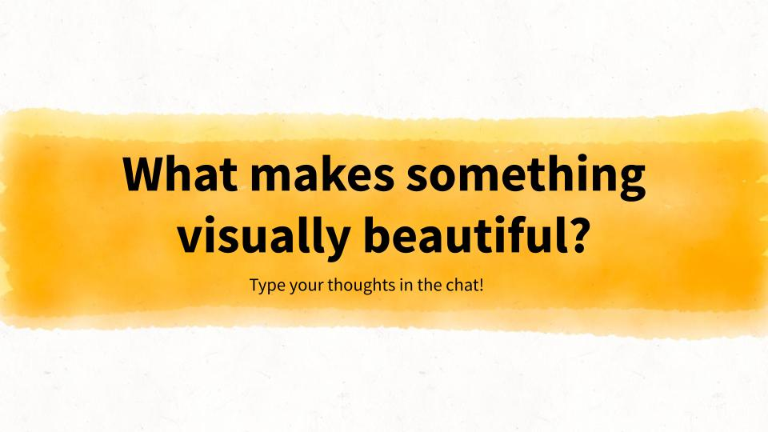
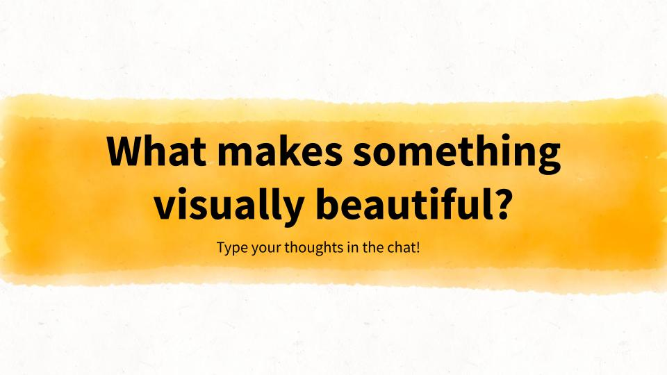

Description
Are you looking for a new angle to get your students excited about math? Why not use the beauty of classical art, nature, and visualization to teach math!
What does the Mona Lisa have in common with the Pyramids of Giza? Is it its age? Its color? What if the answer was… math???? Come learn about how math ties together our favorite pieces of art and architecture (including the Mona Lisa and the Pyramids)! We’ll dive into the mysteries of how artists, architects, and designers across time and place have used math in their works, and we’ll explore how we might use math to inform our creativity by making some art of our own. This workshop is a great way to bring math extensions to students who are interested in art, history, design, or anything in between!
This is the second workshop in the Math and Beauty series-- the relationship between math, art, and architecture. Instructors are encouraged to run the first workshop in the series, Math and Plants, before introducing this workshop to help students build foundational knowledge of the Golden Ratio and the Fibonacci sequence, but this workshop can also be delivered as a free-standing session.
This workshop can be run online or in-person using the Workshop Slides. The Teacher's Guide provides suggestions for running the workshop.
 
